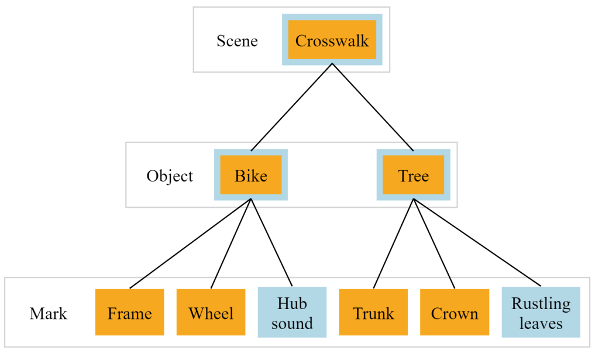

Towards a Systematic Scene Analysis Framework for Audiovisual Data Representations

Venue. AV (2024)
Abstract. Considering the cognitive integration of auditory and visual scene analysis, and the resulting perceptual organization, this paper proposes a systematic conceptual framework for displaying the organization of an audiovisual representation, named Audiovisual Scene Graph. The framework illustrates and highlights how visual and auditory elements merge to become higher-level objects, and how they can also integrate to become audiovisual objects. Furthermore, the framework has the potential to assist in the design of an audiovisual representation, as well as in analyzing existing representations to better understand how they are perceived.